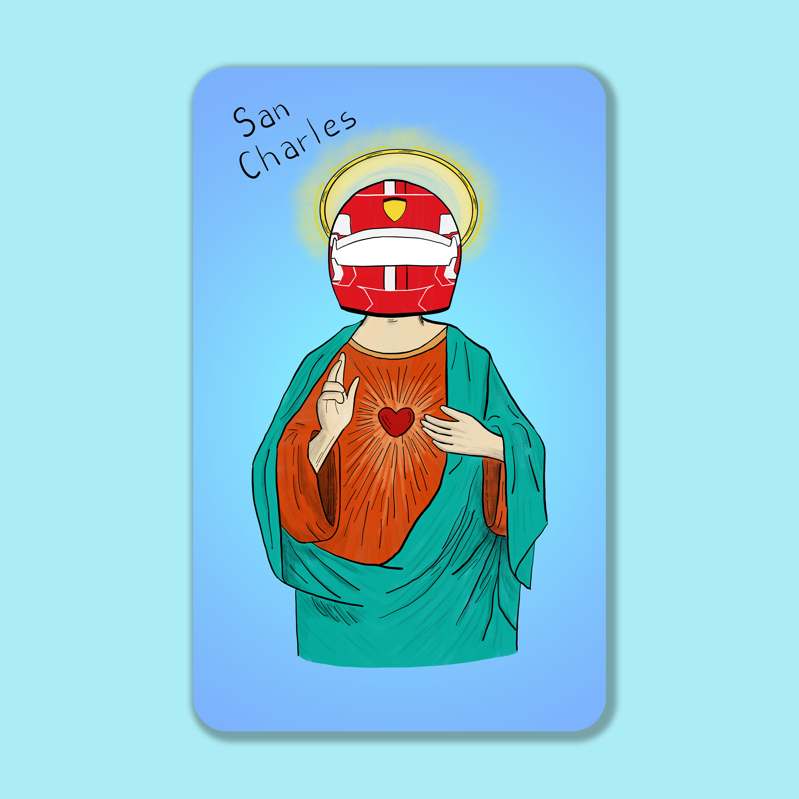
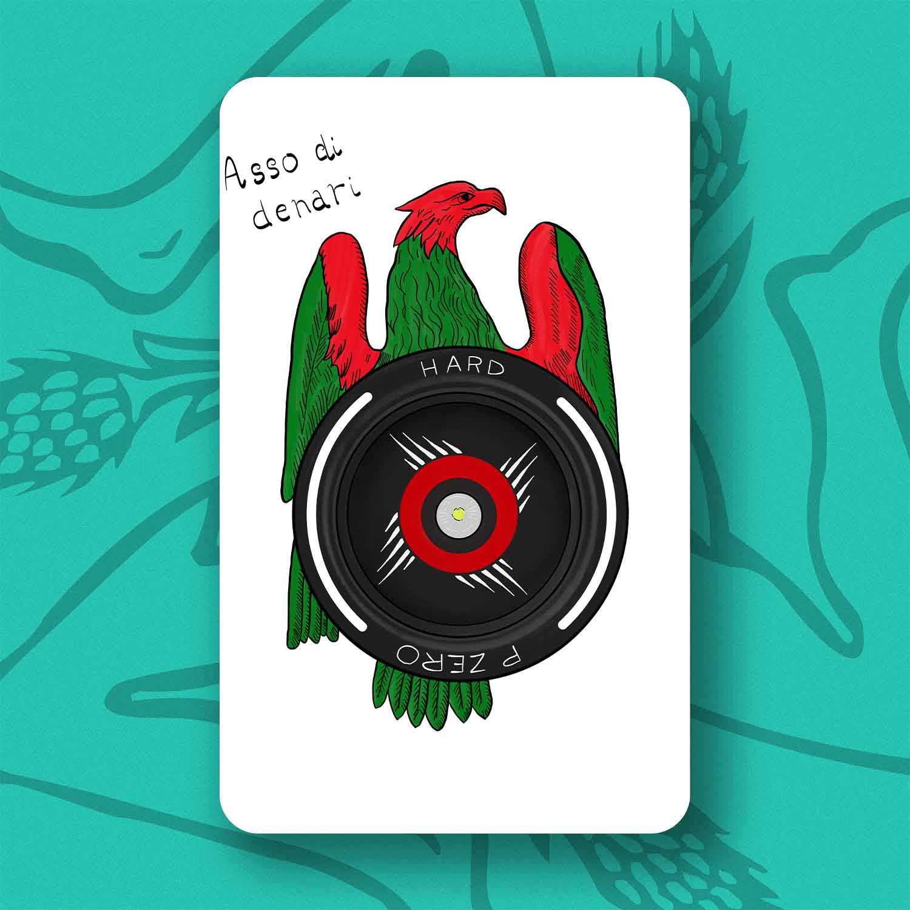
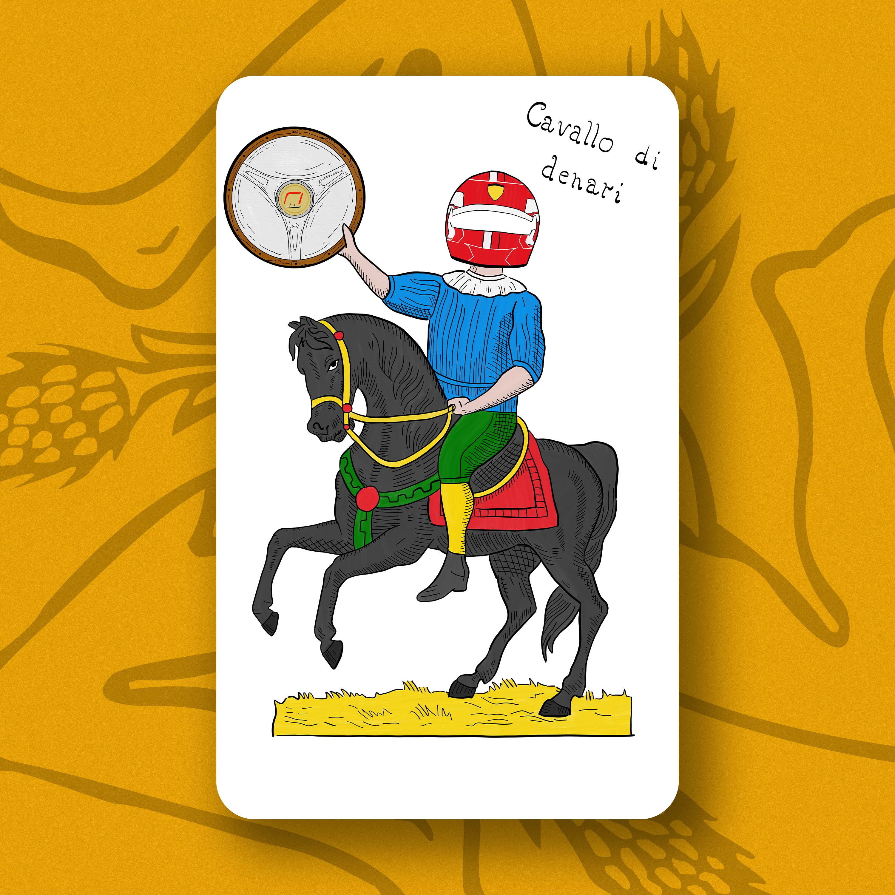
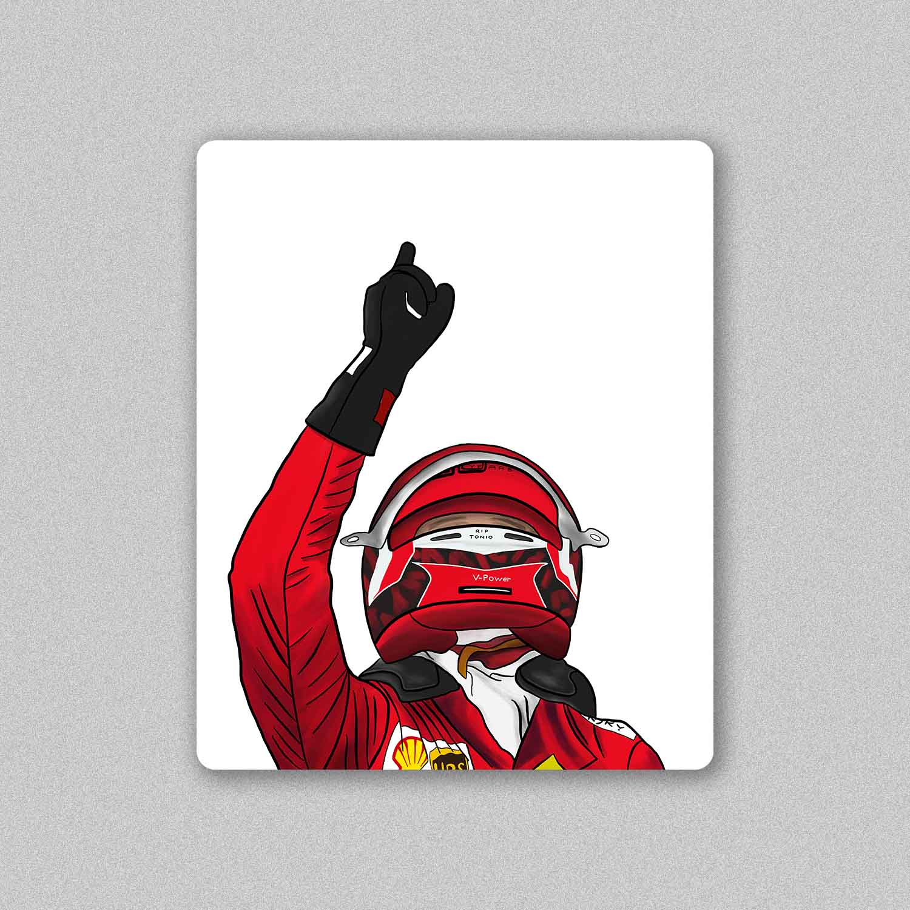
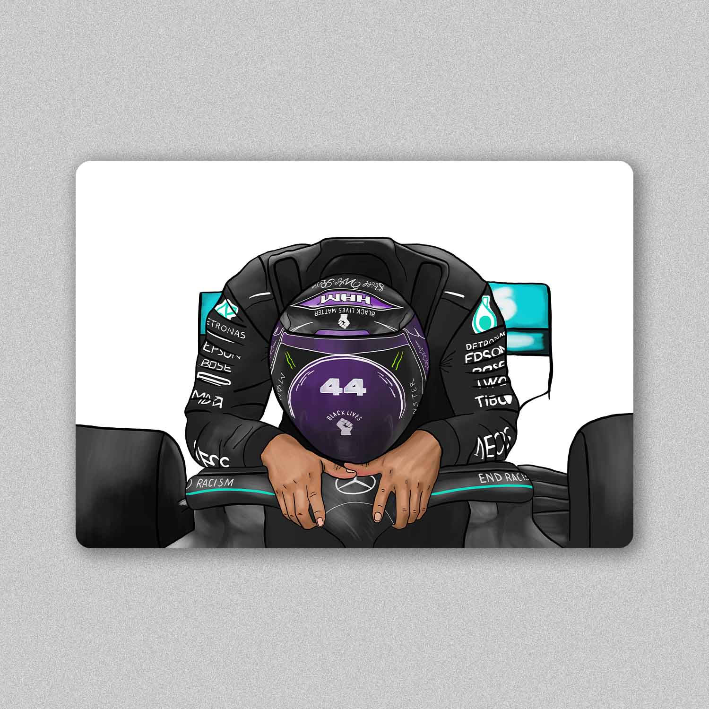

-
San Charles Leclerc
In Italia, Ferrari non è un semplice cognome o una semplice casa automobilistica: è un concetto che va ben oltre. Si tratta di una religione, un culto... Il santo protettore dei tifosi Ferrari: San Charles. Ispirato alla immaginette della tradizione cristiana.
 -
Asso di Denari - Gomme di Formula 1
Un mix di tradizioni e passione. Carte da gioco siciliane e Formula 1. L'asso di denari reinterpretato, sostituendo la grande moneta d'oro con la gomma hard di F1 con copricerchio AlphaTauri.
 -
Charles Leclerc - Cavallo di denari
Un mix di tradizioni e passione. Carte da gioco siciliane e Formula 1. Charles Leclerc in sella al suo cavallo di denari rampante alza al cielo il trofeo del Gran Premio d'Australia (2022) che sostituisce la classica moneta d'oro.
 -
Charles Leclerc - GP Belgio 2019
1 settembre 2019: Charles Leclerc vince il suo primo Gran Premio di Formula 1 nello storico circuito di Spa-Francorchamps. Una vittoria tuttavia dolce-amara, dovuta alla scomparsa dell'amico Anthoine Hubert in un incidente in Formula 2 il giorno prima. A lui, Charles dedica la sua prima in F1 puntando il dito verso il cielo ancor prima di scendere dalla monoposto. Il dettaglio "RIP TONIO" sul casco rappresenta un'ulteriore dedica all'amico.
 -
Lewis Hamilton - GP Turchia 2020
15 novembre 2020: la pioggia ci regala una gara pazza ad Istanbul piena di colpi di scena, ma con una sola certezza: Lewis Hamilton vince e si aggiudica il suo settimo mondiale piloti raggiungendo il mito Schumacher. "You've made the history" gli dice Sebastian Vettel appena sceso dalla sua Ferrari.
